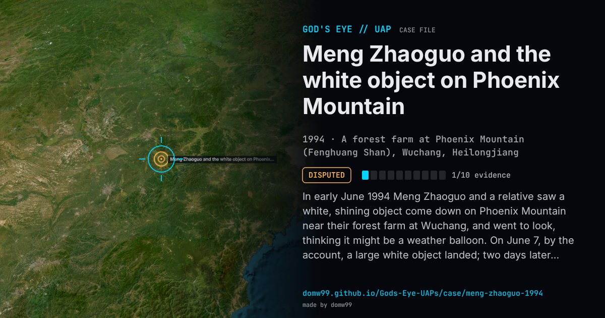

Meng Zhaoguo and the white object on Phoenix Mountain

In early June 1994 Meng Zhaoguo and a relative saw a white, shining object come down on Phoenix Mountain near their forest farm at Wuchang, and went to look, thinking it might be a weather balloon. On June 7, by the account, a large white object landed; two days later, when workers went up to investigate, Meng was struck down by an intense beam of light. He went on to describe visits by tall beings, being taken aboard their craft, and a night in July when he was shown the comet Shoemaker–Levy 9 striking Jupiter. Chinese and foreign media reported that a flying saucer had landed, and the case became the best known in China’s UFO boom of the 1990s.
Explanation
The astronomer Liu Yan of the Purple Mountain Observatory studied the reports for two months and concluded in Science and Technology Daily (January 1995) that, if the story “was not intentionally exaggerated or fabricated”, it “can only have been a hallucination or delusion”. The UFO club at Wuhan University, which looked into it in 1997, thought an initial sighting might have happened but that the later events were almost certainly untrue.
What was seen
Shape: A white, shining object that came down on the mountain; later, tall beings
Witnesses: Meng Zhaoguo, a forest-farm worker, and a relative; workers of the farm
Duration: Weeks of claimed encounters, from early June to July 1994